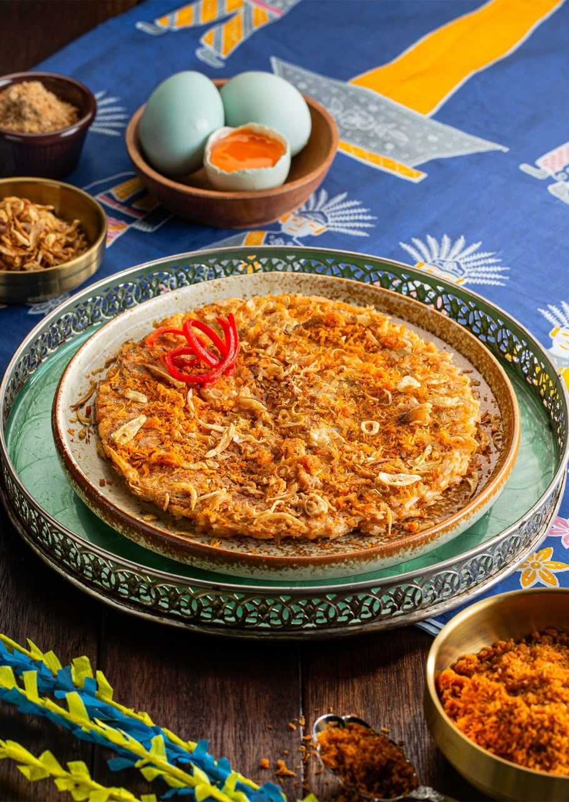

Apa itu Kerak Telor?

Mahakarya Kuliner Tradisional Asli Jakarta
Kerak Telor adalah makanan asli daerah Jakarta (Betawi), yang terbuat dari bahan-bahan utama beras ketan putih, telur ayam atau bebek, ebi (udang kering yang diasinkan dan disangrai kering), ditambah bawang merah goreng, lalu diberi bumbu halus khusus.
Beras Ketan Berkualitas
Dimasak pulen di atas wajan khusus tanpa minyak.
Serundeng & Ebi
Memberikan aroma harum khas yang menggugah selera.